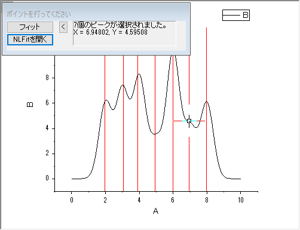
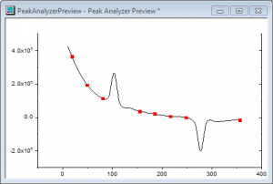
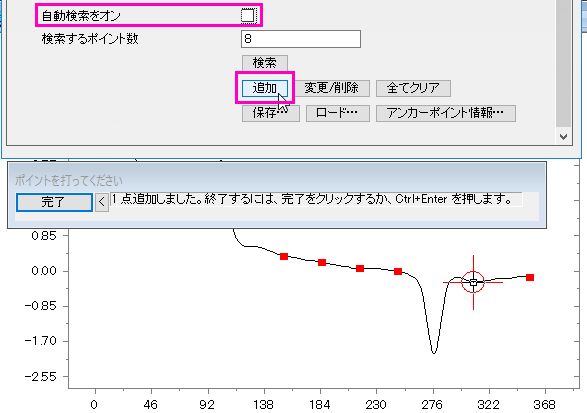
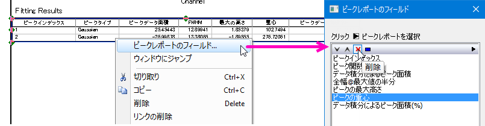

ピーク解析
GSB-pa-tutorial
このレッスンでは、重なったピークの畳み込みと基線の修正を含んだフィッティングを実行します。
畳み込みのある複数のピークフィット
- 前のレッスンで保存したプロジェクトファイルを引き続き使用します。プロジェクトエクスプローラに新規でフォルダを作成し、ピーク解析という名前に変更します。
- 新しいワークブックを開き、OriginのプログラムフォルダにあるSamples\Spectroscopy\HiddenPeaks.datファイルをインポートします。
- 列Bを選択して折れ線グラフを作成します。
- グラフウィンドウをアクティブにし、解析：ピークと基線：複数ピークフィット をクリックします。複数ピークフィットダイアログが開きます。ピーク関数 のドロップダウンリストから Gauss を選択して OK をクリックします。
- ポイントを打ってください ダイアログがグラフウィンドウの中に開きます。このダイアログはウィンドウの中で移動することが出来ます。ピークの中心をダブルクリックし、ピークを選択します。次の画像のように、2つの隠れたピークを含む全7つのピークを選択します。

 | ポイントを打ってください ダイアログにある、NLFitを開く ボタンをクリックすると、選択したピークに対応したピーク中心に初期値が与えられたNLFit ダイアログが開きます。このダイアログで、ご要望に合わせたフィット制御を行うことが出来ます。
|
- 7つのピークを選択し終えたら、フィット ボタンをクリックします。フィット結果がワークブックに追加されます。
基線でピークをフィット
- このレッスンはOriginPro版が必要です。新しいワークブックを開き、Originのプログラムフォルダにある、Samples\Spectroscopy\Peaks_on_Exponential_Baseline.datファイルをインポートします。
- B列を選択し、解析：ピークと基線：ピークアナライザー をクリックします。ピークアナライザー ダイアログと、選択したデータ列のグラフプレビューウィンドウが表示されます。
- ダイアログ下のパネルで、処理 欄にあるピークフィット(Pro) を選択します。上のパネルが更新され、ピークフィットを含んだ工程図が表示されます。
- 進むをクリックします。「基線モード」ページで、「基線モード」ドロップダウンリストから「ユーザー定義」を選びます。進むをクリックし、基線の作成ページに移動します。赤色の線で繋がれた8つのアンカーポイントがプロット上に追加されたことがプレビュー画面で分かります。現在の設定では、この基線が作成されています。
戻る ボタンをクリックして基線モード のページに移動し、基線モードの設定を調整します。
- 検索するポイント数 の下にある、検索 ボタンをクリックし、スペクトル上のアンカーポイントを検索します。8つのアンカーポイントが追加されました。

- 自動検索をオン のチェックを外し、追加 ボタンをクリックして、スペクトル上にアンカーポイントを追加していきます。次の画像のように、スペクトル上でダブルクリックして、アンカーポイントを追加していきます。

- アンカーポイントを選択して、削除することも出来ます。完了 をクリックして、ピークアナライザに戻ります。
- スペクトルにスナップする にチェックを入れて、選択したアンカーポイントが近接のスペクトル上のポイントに移動するようにします。進むをクリックします。
- 基線の作成 ページで、接続線 に フィット（Pro) を選択します。フィット関数の欄で、関数 に ExpDec2 を選択します。進むをクリックしていき、ピーク検索ページに移動します。
- 検索ボタンをクリックします。プレビューで、２つのピークが見つかります。
| 重なったピークを検出するために、2次微分を含んだ幾つかのピーク検索方法が選択できます。2次微分の曲線も確認することが出来、ノイズの多いデータのピーク検索に対応するためにスムージングを行うことが出来ます。
|
- 進むをクリックし、ピークのフィットページに移動します。初期設定のまま、完了 をクリックして、ピークフィットを終了します。フィット結果を含んだグラフが作成されます。
| フィット制御 ボタンをクリックすると、パラメーターの固定や共有、境界や制約の指定などのフィット処理の制御が行えます。
|
- では、フィット結果 のテーブルを編集して、表示する必要のない、いくつかのピークプロパティを非表示にしてみましょう。結果テーブルを右クリックし、コンテキストメニューからピークレポートのフィールドを選択します。テーブルに含まれるすべてのプロパティを含むピークレポートのフィールド ダイアログが開きます。このダイアログで、プロパティを削除したり、順番を変えたりすることが出来ます。ピークの重心 を選択して、削除 ボタンをクリックして非表示にします。データ積分によるピーク面積(%) も同様に非表示にします。OK を押して、グラフのデータテーブルを更新します。

プロジェクトファイルを保存します。